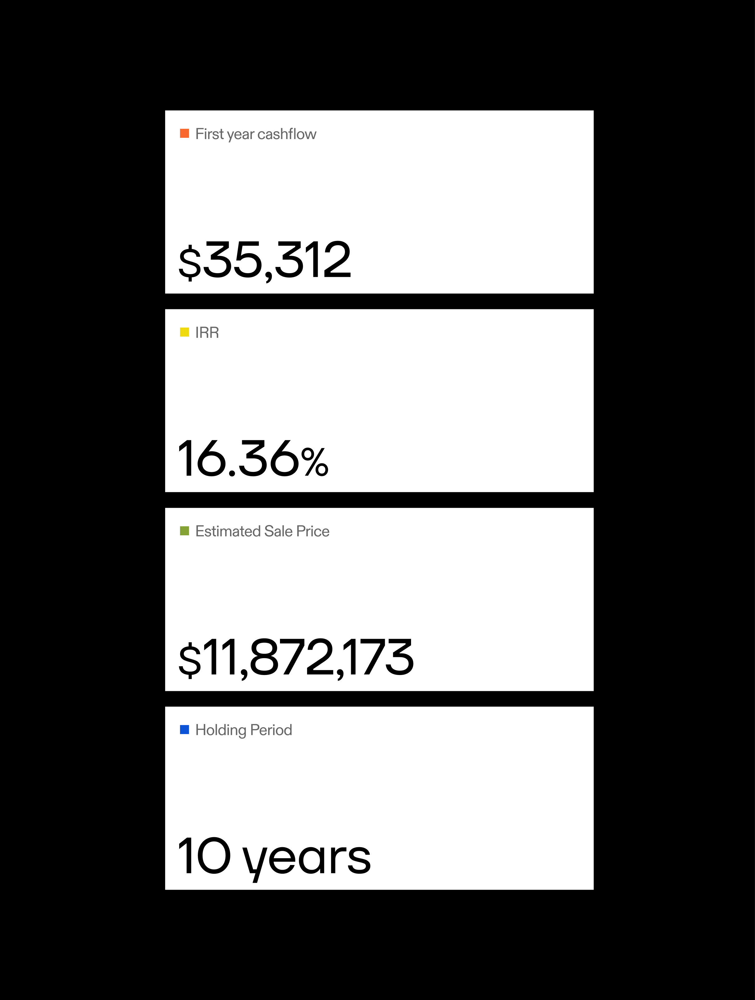
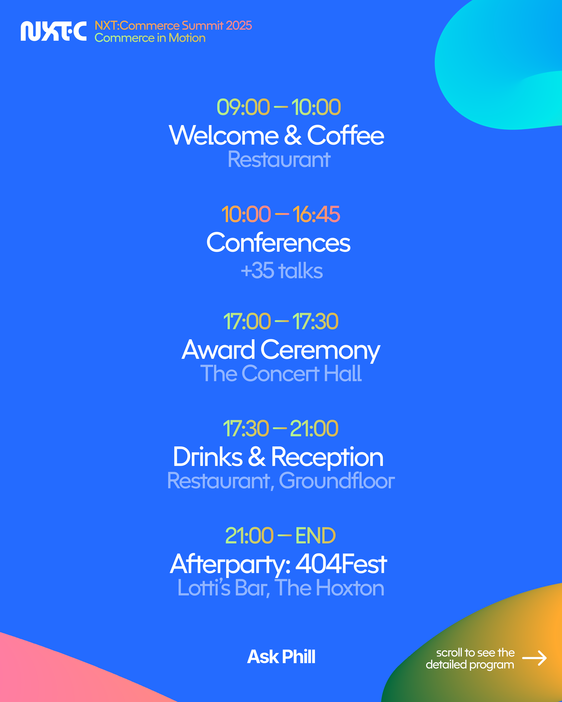
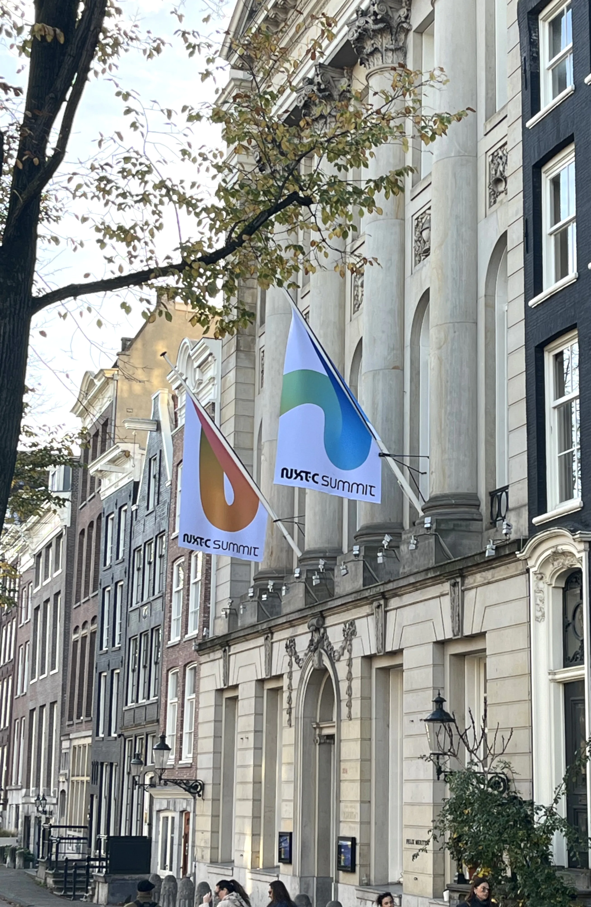

I was born and raised in Bilbao (ES) until the age of 13, when I moved to a boarding school in the south of France. Over the following six years, I studied art and design in several cities: Paris, Le Havre, and Amiens. Eventually graduating with a Master's in UI/UX Design. After that, I pursued my career in Amsterdam, where I began working at Analogue Agency.
I'm deeply interested in exploring alternative ways of building websites and interfaces — starting from small ideas and building them from scratch. My thesis, The We We Want, reflects on the notion of the designer-maker as a response to today's digital landscape, proposing a more playful and meaningful web culture.
This second year in the city asked me to diversify my work related collaborations and focus on more handcoded-websites. In this new phase, I'm looking to work with studios or freelancers where I can bring my ideas, skills, and energy to interesting digital projects.
During my year at Analogue, I worked across branding, web design, and everything in between. From refreshing Guiker's identity — introducing expressive animations and a cohesive design system for their campaigns — to creating print materials for the Fyron event. I also developed the identity and iconography for Vasti, and led the animations and social content for the NXT·C Summit. Additionally, I built several complex Framer websites, including those for M1 Capital and the Erwin Olaf Magazine. At Analogue, I learned to work effectively under a Creative Director, delivering refined, high-quality results while meeting the deadlines set by the project manager. Thank you for this big impression!

The idea behind my diploma project was to design digital tools that simplify and enhance everyday life at school — and beyond it. As part of my research, I focused on identifying the key features the platform should offer and explored different interfaces concepts for them. Elements such as taxonomy, temporality, and the relationships between people were carefully considered to shape how information is connected and experienced. Later on, I built éSADIKOI [eh! ça dit quoi?] around three main pillars: events, places and people. Thanks to a lightweight spreadsheet-based CMS, students and staff can easily add and update entries, fostering connection and participation within the school community. Visit website

Aiming to explain Nerea's somatic dancing practice, the website relies on a very text-based content that offers a literary reading experience while maintaining a digital rhythm. Images appear either as small visual accents or in full-screen frames, creating a balanced contrast. The limited number of pages allows navigation through the colored blocks that frames the website, keeping the experience clean and smart. Visit website
I would like to collaborate with studios or freelancers dealing with more coding projects to bring them my ideas, abilities and energy.
As an junior designer, I worked on complete identities, web design and Framer development
Six-month internship assisting on explorations, rebrandings, animations, and multiple tasks
Volunteer helping siblings with homework and social activities
Welcoming spectators, assistant during the shows, responsable of the cinema
This dual course prepared me to work as a digital designer in modern business ecosystems
Different works, from identities to designs for textiles or motion-design
Studies continuation towards a more artistic creation with digital experiments
Helped to print the vinyl cover of Zuur Köol. Further collaborations
First higher studies, focused on printed graphic design and books
If you're interested in a more in-depth presentation, feel free to reach out. I'd be happy to walk you through my work and the value I can bring to your projects
Call meYou spent here